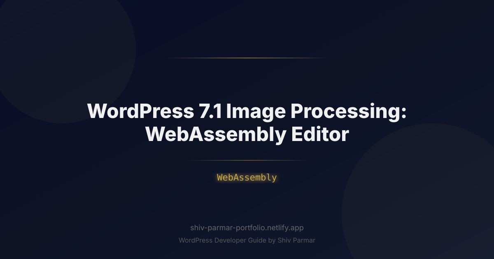

WordPress 7.1 Image Processing: WebAssembly Editor | Shiv Parmar
Table of Contents
For more than two decades, the WordPress media ingestion pipeline has been tethered to an archaic, resource-heavy paradigm: upload an uncompressed 15-megabyte photograph straight from a camera or smartphone, transmit the raw payload across the network to a PHP server, and pray that the hosting environment's memory_limit doesn't choke while ImageMagick or GD attempts to crunch out six different thumbnail variations. This server-side architecture has been the silent culprit behind crashed shared hosts, sluggish administrative dashboards, and ballooning cloud storage bills across millions of installations.
The release of WordPress 7.1 systematically dismantling this legacy workflow with the introduction of its native WebAssembly image editor. By shifting the computational burden of asset decoding, cropping, resizing, color-grading, and modern format encoding directly to client-side hardware, WordPress has decoupled visual content production from server infrastructure constraints. Through browser processing, client machines execute compiled binary modules at near-native speeds, ensuring images are tailored, optimized, and converted before a single byte touches the server's persistent storage.
Whether you manage high-traffic publishing platforms, develop custom themes and plugins, or architect enterprise headless WordPress stacks, understanding this architectural transformation is critical. This guide explores the mechanical foundations of WordPress 7.1's WebAssembly media pipeline, demonstrates how to harness and extend it through practical code implementations, and breaks down the strategies necessary to build ultra-responsive, zero-latency media workflows.
What is the WordPress 7.1 WebAssembly Image Editor?
At its core, the WebAssembly image editor in WordPress 7.1 is a modernized browser runtime that replaces legacy server-side image manipulation libraries (like GD and Imagick) with a high-performance, sandboxed client-side engine. Built upon WebAssembly (Wasm)—a low-level, binary instruction format designed as a portable compilation target for languages such as Rust and C++—this engine executes directly inside the administrator's web browser alongside the Gutenberg block editor and the legacy Media Library.
Historically, when an editor dropped an image into WordPress, the raw file uploaded via admin-ajax.php or the REST API (/wp/v2/media). The server intercepted the stream, invoked PHP bindings for ImageMagick or GD, allocated massive memory buffers to unpack raw pixel arrays, and spawned multiple child processes to render thumbnails (thumbnail, medium, large, and custom theme crops). In WordPress 7.1, the browser downloads a highly optimized, pre-compiled WebAssembly module (approximately 180KB compressed) that exposes an ultra-fast graphics processing pipeline directly to JavaScript via an ergonomic API.
Instead of dispatching multi-megabyte payloads over the wire to be processed remotely, browser processing intercepts file inputs locally. The Wasm runtime reads the image data into linear memory, reads EXIF orientation flags, computes responsive scale dimensions, applies user-selected edits (such as aspect ratio cropping, rotation, duotone filters, and contrast enhancements), and encodes the final responsive image set directly into next-generation formats like AVIF and WebP using SIMD (Single Instruction, Multiple Data) multi-threading.
Only the finished, production-ready assets—such as the full-resolution optimized master and its corresponding responsive downscales—are transmitted across the network to the WordPress server. The host server's role transitions from an active compute node to a passive, secure storage router. For environments without modern browser capabilities, WordPress 7.1 maintains an intelligent progressive enhancement layer, automatically falling back to traditional PHP-based media handlers without administrative friction.
Why Browser Processing Matters in 2026
The media landscape of 2026 demands instantaneous updates, universal support for complex visual formats, and strict environmental and financial efficiency in cloud computing. Offloading compute cycles to the client is no longer just a clever micro-optimization; it is an architectural necessity. The integration of client-side WebAssembly pipelines fundamentally addresses four critical operational bottlenecks:
- Elimination of Server Memory Spikes: Image processing is notoriously memory-intensive. Unpacking a 48-megapixel image taken with a modern mobile device requires over 190 megabytes of uncompressed RAM during the RGB transformation phase. In shared hosting or containerized environments (such as Kubernetes pods running PHP-FPM), concurrent uploads have historically triggered Out-Of-Memory (OOM) fatal errors. Moving this to client-side browser processing completely eliminates server memory overhead.
- Bandwidth Minimization and Instant Ingestion: By performing operations locally, uploads are no longer bottlenecked by asymmetric internet connections. A 20MB raw smartphone capture is compressed into a 450KB AVIF image in the browser *before* upload. This drops data transmission requirements by up to 90%, speeding up publishing workflows over spotty connections or mobile hotspots.
- Zero-Latency Visual Feedback: In older versions of WordPress, clicking "Crop" or applying a rotation forced the user to wait for a round-trip server request, background regeneration, and page cache invalidation. With the WebAssembly image editor, operations occur at 60 frames per second using hardware acceleration (via WebGL/WebGPU and OffscreenCanvas integrations), giving publishers immediate interactive control over their media.
- Universal Modern Codec Deployment: Enabling server-side AVIF or JPEG XL encoding has notoriously plagued system administrators due to missing C-libraries, broken dependencies, or strict host limitations. Distributing an encoder compiled to WebAssembly guarantees that every administrative user running an updated browser can export to cutting-edge formats reliably, regardless of whether the hosting server runs a bare-bones PHP environment on Alpine Linux or an enterprise cloud matrix.
| Feature / Metric | Legacy WordPress (PHP/Imagick) | WordPress 7.1 (WebAssembly Core) |
|---|---|---|
| Processing Location | Server (PHP-FPM worker) | Client Browser (Wasm via Web Workers) |
| Server RAM Consumption | Extreme (128MB–512MB per image) | Zero (Stateless file reception) |
| Bandwidth Ingestion | Transmits raw uncompressed assets | Transmits pre-compressed, tailored outputs |
| UI Interactivity | Static, blocked by round-trip HTTP requests | Real-time (60fps canvas previews) |
| Format Compatibility | Dependent on host OS libraries (libavif, etc.) | Guaranteed via self-contained Wasm binaries |
Step-by-Step Guide: Implementing and Extending the WebAssembly Image Editor
WordPress 7.1 ships with this architecture enabled out of the box for standard block editor media workflows. However, developers can configure its execution parameters, register custom filtering pipelines, compile bespoke image routines, and manage fallback environments. The following sections walk through configuring, extending, and customizing the WebAssembly image editing engine.
Step 1: Configuring Engine Directives in wp-config.php and Theme Hooks
You can fine-tune how aggressively WordPress relies on client-side compilation versus classic server fallbacks through core flags. For enterprise environments where administrators might upload internal assets that require client-side watermark stamping or strict dimension limits before hitting the server, define these rules in wp-config.php or via theme support.
To explicitly mandate client-side WebAssembly media handling and define strict memory bounds for the browser worker thread, declare the following constants:
// Enforce WebAssembly processing for all administrative users
define( 'WP_WASM_IMAGE_PROCESSOR', true );
// Set the maximum client-side linear memory allocation (in Megabytes)
define( 'WP_WASM_MAX_MEMORY_MB', 512 );
// Force the client pipeline to export modern formats prior to upload
define( 'WP_PREFER_CLIENT_AVIF_ENCODING', true );
Next, integrate theme support inside your theme's functions.php file. This registers the specific image aspect ratios and responsive constraints directly with the client-side pipeline so that the browser-side image editor knows exactly which derivatives to render:
add_action( 'after_setup_theme', function() {
// Add theme support for responsive client-side derivatives
add_theme_support( 'wasm-responsive-derivatives', array(
'sizes' => array(
'thumbnail' => array( 'width' => 150, 'height' => 150, 'crop' => true ),
'medium' => array( 'width' => 768, 'height' => 0, 'crop' => false ),
'hero-retina'=> array( 'width' => 1920, 'height' => 1080, 'crop' => true ),
),
'formats' => array( 'image/avif', 'image/webp' ),
'quality' => array(
'image/avif' => 78,
'image/webp' => 82,
),
'auto_strip_exif' => true,
) );
} );
Step 2: Intercepting the Media Ingestion Pipeline via JavaScript
WordPress 7.1 exposes the wp.mediaEditor.wasm JavaScript interface inside the administrative bundle. Developers can leverage this API to tap into the client lifecycle hooks—running code right as the file drops into the browser, during intermediate transformations, and right before transmission to the server.
Create an administrative script named wasm-media-intercept.js and enqueue it using admin_enqueue_scripts. This script demonstrates how to hook into the raw processing pipeline to execute automated adjustments:
import { registerImageMiddleware } from '@wordpress/wasm-media-processor';
// Register a middleware filter for the WebAssembly Image Processing Pipeline
registerImageMiddleware( 'custom-editorial-guardrail', {
priority: 10,
// Triggered immediately after the Wasm module reads the raw image buffer
async process( { rawImageData, metadata, wasmCore } ) {
console.log( `Processing: ${metadata.name} | Dimensions: ${metadata.width}x${metadata.height}` );
// Inspect metadata: If the image exceeds 4K dimensions, execute downsampling
if ( metadata.width > 3840 ) {
console.warn( 'Source image exceeds 4K boundary. Invoking Wasm Lanczos downscaler.' );
// Execute the compiled resize routine inside the active Web Worker
rawImageData = await wasmCore.resize( rawImageData, {
targetWidth: 3840,
algorithm: 'Lanczos3',
preserveAspect: true
} );
}
// Apply an automated sharpening pass directly inside WebAssembly linear memory
const enhancedBuffer = await wasmCore.applyConvolution( rawImageData, {
kernel: 'unsharp_mask',
intensity: 0.25
} );
// Return the modified buffer downstream for final AVIF/WebP encoding
return enhancedBuffer;
}
} );
Step 3: Compiling Custom Rust Image Routines to WebAssembly
While WordPress 7.1 includes an extensive suite of baseline transformations (cropping, scaling, color adjustment, format translation), enterprise sites often require customized computational photography features, such as custom watermarking or proprietary compression algorithms. You can compile your own Rust algorithms to WebAssembly and plug them directly into the core editor.
Here is an example Rust library utilizing the popular image crate, compiled to a Wasm target that exposes a high-performance duotone adjustment function:
// src/lib.rs
use wasm_bindgen::prelude::*;
use image::{ImageBuffer, Rgba};
#[wasm_bindgen]
pub fn apply_custom_duotone(
image_data: &[u8],
width: u32,
height: u32,
primary_color: &[u8], // [r, g, b]
secondary_color: &[u8] // [r, g, b]
) -> Result<Vec<u8>, JsValue> {
// Wrap the raw memory slice into a safe ImageBuffer
let mut img: ImageBuffer<Rgba<u8>, _> = ImageBuffer::from_raw(width, height, image_data.to_vec())
.ok_or_else(|| JsValue::from_str("Failed to map linear memory to ImageBuffer"))?;
for pixel in img.pixels_mut() {
// Compute perceptual luminance
let lum = (0.299 * pixel[0] as f32 + 0.587 * pixel[1] as f32 + 0.114 * pixel[2] as f32) / 255.0;
// Linear interpolation across primary and secondary color profiles
pixel[0] = ((1.0 - lum) * primary_color[0] as f32 + lum * secondary_color[0] as f32) as u8;
pixel[1] = ((1.0 - lum) * primary_color[1] as f32 + lum * secondary_color[1] as f32) as u8;
pixel[2] = ((1.0 - lum) * primary_color[2] as f32 + lum * secondary_color[2] as f32) as u8;
}
Ok(img.into_raw())
}
Compile this code using wasm-pack:
wasm-pack build --target web --release
The resulting .wasm binary and JavaScript glue code can then be loaded into your WordPress administrative environment, allowing you to invoke apply_custom_duotone inside the browser processing loop prior to the upload request.
Step 4: Building a Gutenberg Block Custom Filter Extension
With the processing capabilities available via Wasm, we can extend the native Image block inside the Gutenberg editor. This allows content creators to manipulate media directly on the canvas without reloading the page or pinging external services.
The following React/JSX snippet hooks into Gutenberg's editor.BlockEdit filter, injecting a new controls panel that executes a WebAssembly-powered monochrome transformation instantly:
import { addFilter } from '@wordpress/hooks';
import { PanelBody, Button } from '@wordpress/components';
import { InspectorControls } from '@wordpress/block-editor';
import { useWasmEngine } from '@wordpress/wasm-media-processor';
const withWasmMonochromeFilter = ( BlockEdit ) => ( props ) => {
if ( props.name !== 'core/image' ) {
return <BlockEdit { ...props } />;
}
const { attributes, setAttributes } = props;
const { wasmCore, isReady } = useWasmEngine();
const handleApplyMonochrome = async () => {
if ( ! isReady || ! attributes.url ) return;
// Fetch current image as a raw binary array buffer
const response = await fetch( attributes.url );
const blob = await response.blob();
const arrayBuffer = await blob.arrayBuffer();
// Dispatch heavy execution to the background Wasm worker thread
const processedBlob = await wasmCore.execute( 'to_grayscale', {
buffer: arrayBuffer,
mimeType: blob.type
} );
// Create an instant local Object URL for zero-latency canvas updates
const localPreviewUrl = URL.createObjectURL( processedBlob );
// Update Gutenberg block attributes directly
setAttributes( { url: localPreviewUrl } );
// Silently push the updated asset to server storage in the background
await wasmCore.syncToServer( {
id: attributes.id,
blob: processedBlob
} );
};
return (
<>
<BlockEdit { ...props } />
<InspectorControls>
<PanelBody title="Wasm Canvas Controls" initialOpen={ true }>
<Button
variant="secondary"
onClick={ handleApplyMonochrome }
disabled={ ! isReady }
>
Apply Instant Grayscale
</Button>
</PanelBody>
</InspectorControls>
</>
);
};
addFilter(
'editor.BlockEdit',
'core/image-wasm-extension',
withWasmMonochromeFilter
);
Step 5: Configuring Server-Side Cryptographic Validation
Relying on client-side browser processing introduces an important security consideration: you must never implicitly trust that the browser executed the image conversions faithfully or securely. Malicious users can intercept client-side requests, modify scripts, or inject harmful payloads disguised as image files.
WordPress 7.1 incorporates strict validation hooks to verify client-generated WebAssembly output. When a file arrives, the server checks the binary header signatures and runs a lightweight scan before accepting the asset into the uploads directory:
// functions.php: Validate client-processed WebAssembly output
add_filter( 'wp_handle_upload_prefilter', function( $file ) {
// Verify file structure using lightweight native PHP checks
$file_info = wp_check_filetype_and_ext( $file['tmp_name'], $file['name'] );
$allowed_mime_types = array( 'image/avif', 'image/webp', 'image/jpeg', 'image/png' );
if ( ! in_array( $file_info['type'], $allowed_mime_types, true ) ) {
$file['error'] = __( 'Security rejection: Client Wasm output does not match approved visual media specifications.', 'textdomain' );
return $file;
}
// Optional: Validate that the client provided the expected cryptographic processing hash
$wasm_payload_hash = isset( $_POST['wasm_checksum'] ) ? sanitize_text_field( $_POST['wasm_checksum'] ) : '';
$computed_hash = hash_file( 'sha256', $file['tmp_name'] );
if ( ! empty( $wasm_payload_hash ) && ! hash_equals( $wasm_payload_hash, $computed_hash ) ) {
$file['error'] = __( 'Integrity mismatch: Payload corrupted during browser compilation stage.', 'textdomain' );
return $file;
}
return $file;
} );
Best Practices for WebAssembly Image Processing in WordPress
Shifting mission-critical image decoding and encoding workflows to hundreds of different client browser profiles requires robust architecture. Keep these operational best practices in mind when designing plugins, themes, or custom editing blocks:
1. Isolate Processing Inside Dedicated Web Workers
Never instantiate or execute your WebAssembly modules on the browser's primary execution thread. Processing a multi-megapixel image requires intensive mathematical operations. Running these tasks on the main UI thread freezes the Gutenberg editor, causing dropped frames, lagging typing responses, and unresponsive interface warnings. WordPress 7.1 automatically structures its Wasm processing within Web Workers using the Comlink or native postMessage patterns; ensure any custom modules you introduce run asynchronously inside a worker thread.
2. Manually Manage WebAssembly Linear Memory
Unlike standard JavaScript code, which relies entirely on automatic garbage collection, languages like C++ and Rust compiled to WebAssembly allocate chunks within a raw continuous byte array known as linear memory. If you load twenty 8-megapixel photos into memory without deallocating the source buffers via pointer disposal, the browser tab will consume gigabytes of system memory and crash. Always pair resource allocations with immediate cleanup calls within your module APIs:
// Explicit cleanup pattern after rendering operation completes
try {
const rawBufferPointer = wasmCore.allocateMemory( bufferSize );
wasmCore.transform( rawBufferPointer, width, height );
} finally {
// Crucial: Free the linear memory pointer back to the runtime allocator
wasmCore.freeMemory( rawBufferPointer );
}
3. Leverage IndexedDB for Module and Blob Caching
Compiling .wasm files from network byte arrays into executable machine instructions takes valuable time on the first page load. WordPress uses the browser's persistent IndexedDB layer to cache compiled WebAssembly.Module instances alongside intermediate image blobs. This ensures that opening the Media Library on return visits does not require downloading or recompiling the binary engine, providing an instantaneous editing experience.
4. Adopt a Fallback-First Progressive Enhancement Approach
Not every client device supports modern WebAssembly execution contexts. Older mobile browsers, legacy desktop enterprise installations, or users with restrictive security configurations (such as disabled WebAssembly permissions or restrictive Content Security Policies) will fail to boot the runtime. Always write client code that inspects feature availability prior to execution:
function supportsWasmImagePipeline() {
return typeof WebAssembly === 'object'
&& typeof WebAssembly.instantiate === 'function'
&& typeof window.Worker === 'function'
&& typeof HTMLCanvasElement.prototype.transferControlToOffscreen === 'function';
}
if ( supportsWasmImagePipeline() ) {
initClientSideWasmEditor();
} else {
initLegacyServerSideUploader();
}
Common Mistakes to Avoid
Transitioning from an established, server-dominated paradigm to decentralized client execution introduces subtle pitfalls. Avoid these common mistakes when working with WordPress 7.1's WebAssembly ecosystem:
Overloading Client Devices with Unconstrained Multi-Threading
Modern WebAssembly modules leverage SharedArrayBuffer and Web Workers to execute multi-threaded transformations across multiple CPU cores. While an eight-core workstation handles parallel image encoding easily, executing four SIMD-accelerated AVIF encodings simultaneously on a mid-range mobile phone will thermal-throttle the hardware and drain the device's battery. Always inspect navigator.hardwareConcurrency and throttle worker execution queues to prevent client hardware saturation.
Neglecting Strict Content Security Policies (CSP)
By default, strict Content Security Policies that block arbitrary binary evaluation can prevent WebAssembly compilation. If your server sends a restrictive header without the necessary directives, the browser will block the editor from loading:
<!-- INCORRECT: Will trigger a CSP failure when instantiating the module -->
Content-Security-Policy: script-src 'self';
<!-- CORRECT: Permits evaluation of sandboxed WebAssembly binaries -->
Content-Security-Policy: script-src 'self' 'wasm-unsafe-eval';
Trusting Client-Side Optimizations for Critical Metadata Stripping
While the WebAssembly editor includes an automated function to strip EXIF data (such as GPS coordinates and personal camera identifiers) directly in the browser, developers must never assume this process is completely tamper-proof. If you run a platform where sensitive EXIF leakage poses security or compliance risks, you must maintain a lightweight fallback verification script on the server to sanitize any uploaded file that bypasses the client-side pipeline.
Neglecting Server Storage Strategies for Pre-Rendered Derivatives
Because the client-side image editor generates scaled versions (thumbnails, medium sizes, and retina derivatives) prior to upload, your upload handler may receive multiple independent binary files in a single ingestion sequence. Failing to link these derivatives within WordPress's attachment database (wp_posts and wp_postmeta tables) can leave orphaned visual files in your wp-content/uploads folder. Always use the wp_generate_attachment_metadata hooks to properly map client-rendered responsive alternatives back to their parent attachment ID.
Ignoring Fallbacks for Headless Deployments
Decoupled and headless architectures that expose custom ingestion endpoints (such as mobile applications or external publishing scripts) will not trigger the browser-based WebAssembly interface unless that environment runs a dedicated Node.js or embedded Wasm runner. If your architecture relies heavily on third-party ingestion, ensure you retain server-side image processing capabilities (like a containerized ImageMagick microservice or an edge worker) to handle uploads from external clients.
Conclusion
This guide covered everything you need to know about WordPress 7.1 Image Processing: WebAssembly Editor. By following these steps, you can implement these solutions on your WordPress site today.
If you need help with WordPress development, WooCommerce, or performance optimization, feel free to reach out. I work with clients worldwide and deliver high-quality results.